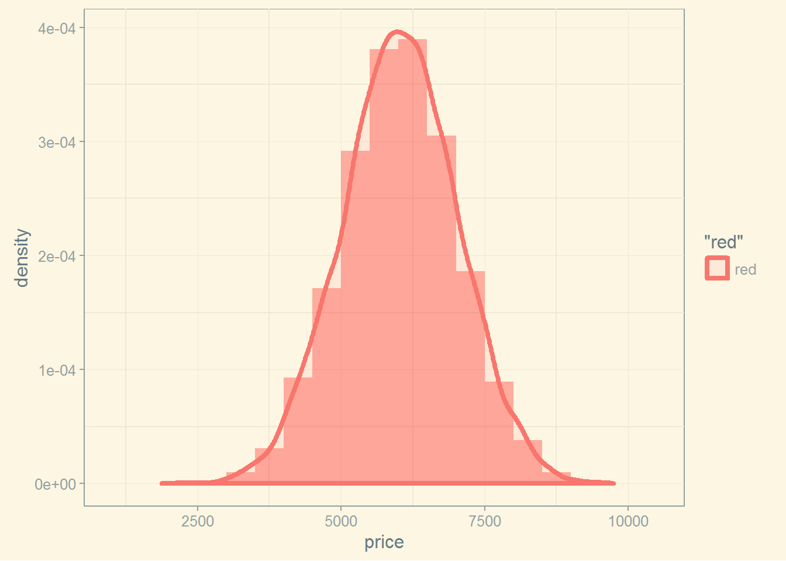
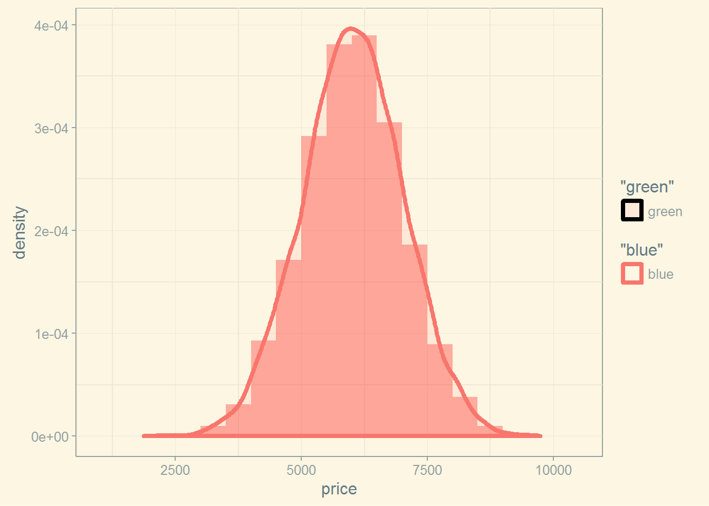
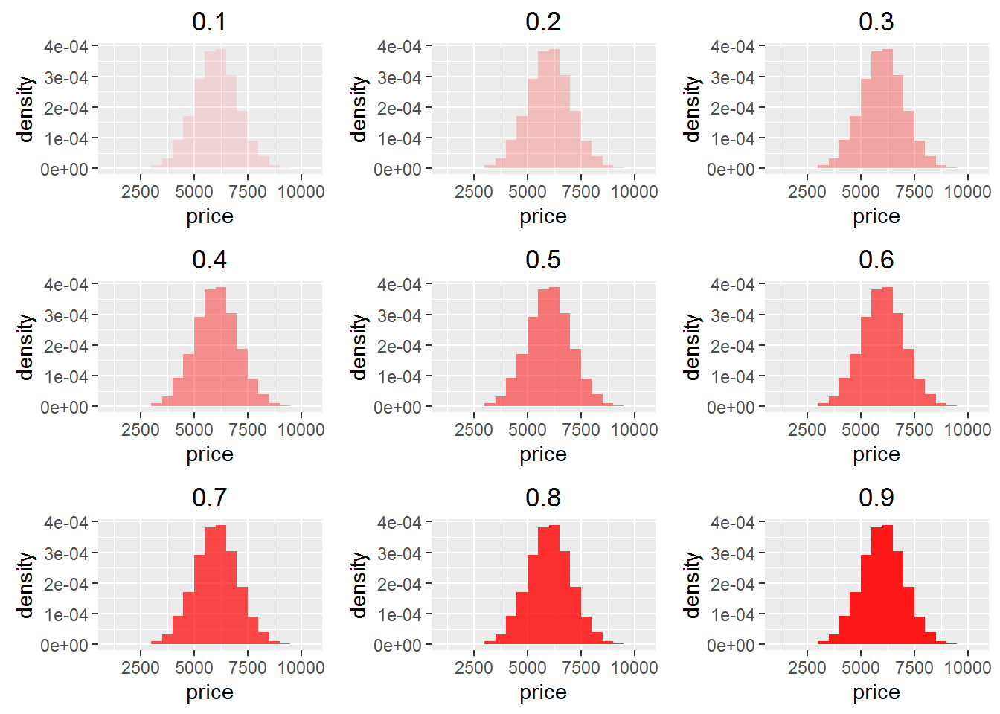
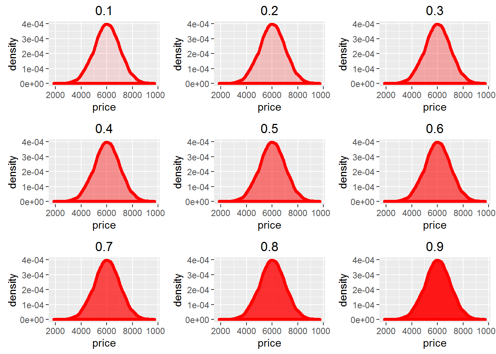
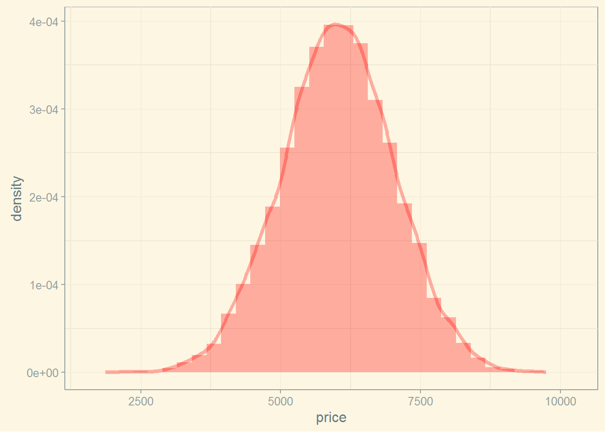
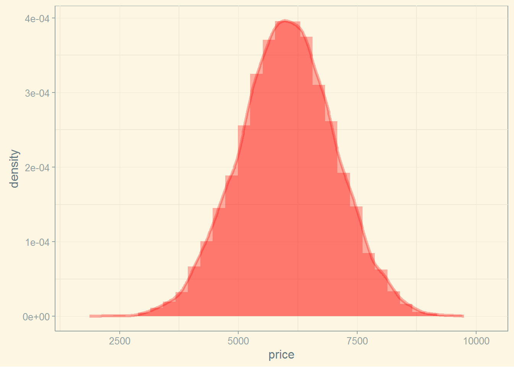

元のグラフはこんな感じ。
knitr::opts_chunk$set(message = FALSE)
set.seed(71)
library(ggplot2)
x <- data.frame(price = rnorm(10000, mean = 6000, sd = 1000))
p <- ggplot(x, aes(x=price,y= ..density..))
p +
geom_histogram(alpha = 0.3, binwidth=500, fill="red")+
geom_density(aes(colour="red",fill="red"), alpha=0.1, size=1.5) +
ggthemes::theme_solarized()
でもこれは、aes()の中が"blue"でも"green"でもこの色になる。たまたまデフォルトの色が赤っぽいだけ。
p +
geom_histogram(alpha = 0.3, binwidth=500, fill="red") +
geom_density(aes(colour="blue",fill="green"), alpha=0.1, size=1.5) +
ggthemes::theme_solarized()
なぜこんなことをするかというと、alphaの効き方がgeom_histogram()とgeom_density()で違っていて、 geom_density()は線の透明度を変えてくれないから。 alpha=0.3の赤に近い色にgeom_density()のcolourを変えている。alphaではなくて。
h <- lapply(0.1 * 1:9, function(a) p + geom_histogram(alpha = a, binwidth=500, fill="red") + ggtitle(a))
do.call(gridExtra::grid.arrange, h)
d <- lapply(0.1 * 1:9, function(a) p + geom_density(alpha = a, size=1.5, fill="red", colour="red") + ggtitle(a))
do.call(gridExtra::grid.arrange, d)
で、たぶん正解は線を引くのにgeom_density()を使わないことで、geom_freqpoly()とかgeom_line(stat = "density")を使えば似たようなのができる。
p +
geom_histogram(alpha=0.3, fill="red") +
geom_freqpoly(colour="red", alpha=0.3, size=1.5) +
ggthemes::theme_solarized()## `stat_bin()` using `bins = 30`. Pick better value with `binwidth`.
## `stat_bin()` using `bins = 30`. Pick better value with `binwidth`.p +
geom_histogram(alpha=0.3, fill="red") +
geom_line(stat = "density", colour="red", alpha=0.3, size=1.5) +
ggthemes::theme_solarized()## `stat_bin()` using `bins = 30`. Pick better value with `binwidth`.
ただし、geom_freqpoly()とかgeom_line()にfillは設定できないので、それがほしければ線なしのgeom_density()を重ねる。
p +
geom_histogram(alpha=0.3, fill="red") +
geom_line(stat = "density", colour="red", alpha=0.3, size=1.5) +
geom_density(colour = "transparent", fill="red", alpha=0.3)+
ggthemes::theme_solarized()## `stat_bin()` using `bins = 30`. Pick better value with `binwidth`.
alpha("色", 透明度)を指定するという手があるらしい。
p +
geom_histogram(alpha=0.3, fill="red") +
geom_line(stat = "density", colour="red", alpha=0.3, size=1.5) +
geom_density(fill=alpha("red", 0.3), colour=alpha("red", 0.3)) +
ggthemes::theme_solarized()## `stat_bin()` using `bins = 30`. Pick better value with `binwidth`.